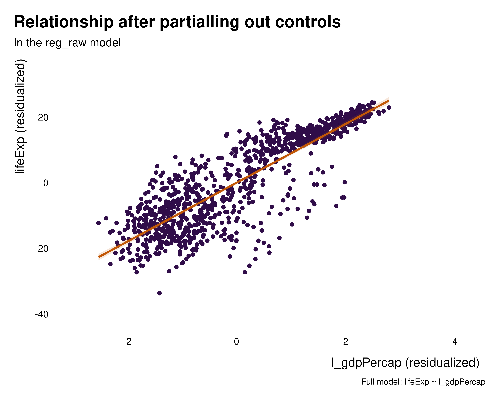
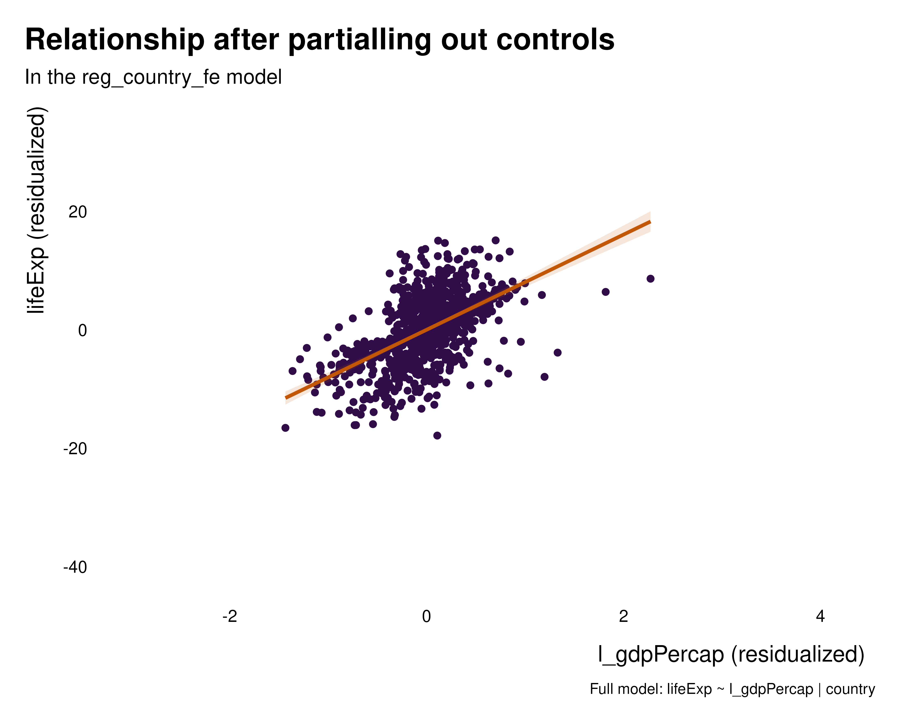
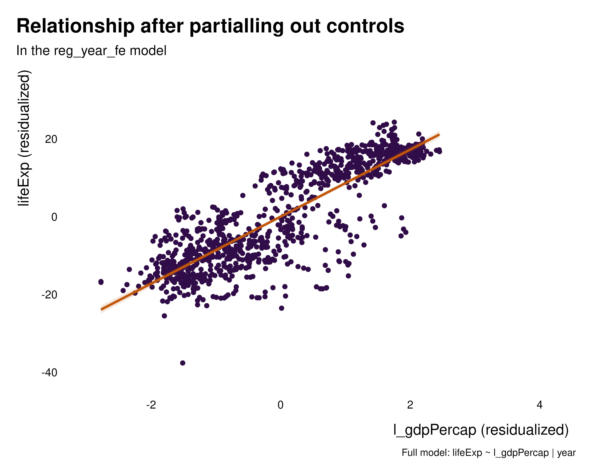
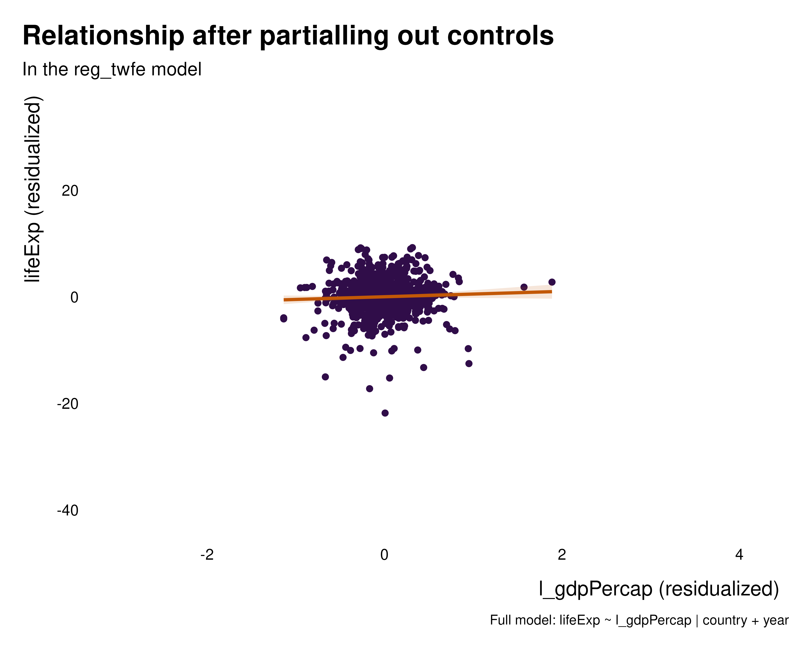
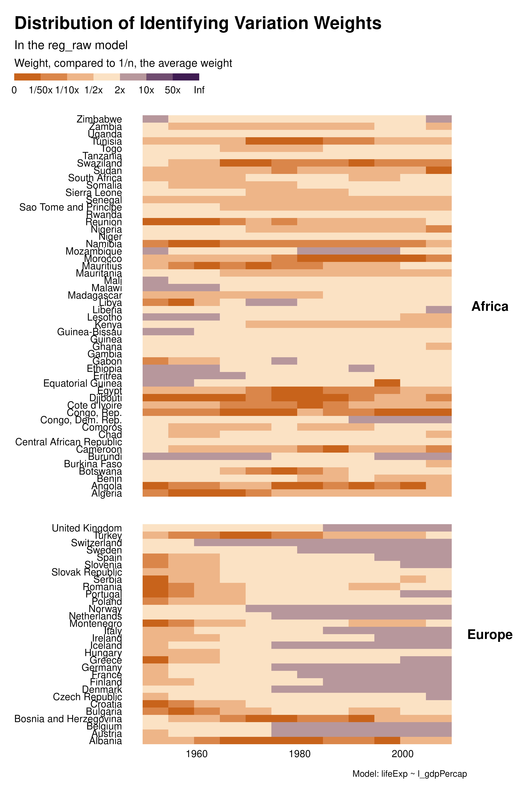
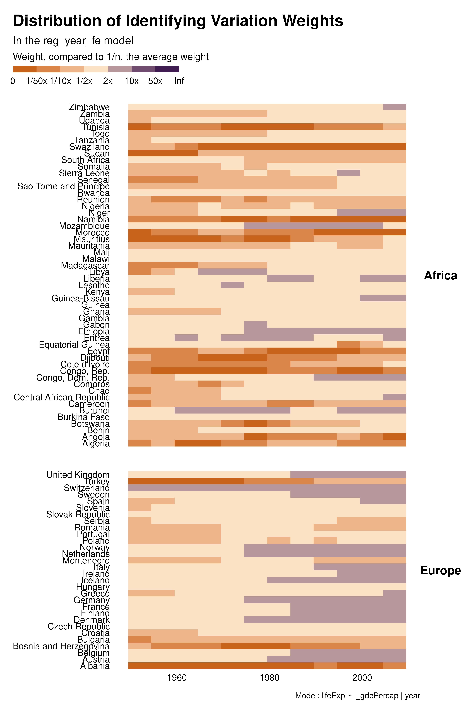

Specification and variation
specification.RmdThis document discusses how ididvar can be used to
discuss the impact of specification choices on the identifying variation
weights and their distribution across observations. In particular, it
discusses how the package can provide insights on how different levels
of fixed effects affect the weights and the observations contributing to
identification.
For this example, let’s use the gapminder data set built
on gapminder.org and made
available by the gapminder
package. It contains data on life expectancy, GDP per-capita and
population, for all countries in the world, every 5 years between 1952
and 2007. It is therefore a panel.
library(ididvar)
library(gapminder)
library(fixest)
library(ggplot2)
library(dplyr)
library(purrr)
library(knitr)
library(rnaturalearth)
library(rnaturalearthdata)
library(sf)In this example, we are interested in studying the relationship between life expectancy and (log-)GDP per capita. We will consider several sets of fixed effects and study their impact on the variation used for identification.
Specifications
Let’s consider 5 regression models: with country, continent, year, continent-year, and country-year fixed effects. We do not include any additional controls for simplicity.
gapminder_ext <- gapminder |>
dplyr::mutate(l_gdpPercap = log(gdpPercap)) |>
dplyr::filter(continent %in% c("Africa", "Europe")) |>
dplyr::left_join(gapminder::country_codes, by = join_by(country))
reg_raw <- feols(data = gapminder_ext, lifeExp ~ l_gdpPercap)
reg_continent_fe <- feols(data = gapminder_ext, lifeExp ~ l_gdpPercap | continent, cluster = "continent")
reg_country_fe <- feols(data = gapminder_ext, lifeExp ~ l_gdpPercap | country, cluster = "country")
reg_continent_year_fe <- feols(data = gapminder_ext, lifeExp ~ l_gdpPercap | continent^year, cluster = c("continent^year"))
reg_year_fe <- feols(data = gapminder_ext, lifeExp ~ l_gdpPercap | year, cluster = "year")
reg_twfe <- feols(data = gapminder_ext, lifeExp ~ l_gdpPercap | country + year, cluster = c("country", "year"))
regs <- list(
reg_raw = reg_raw,
reg_continent_fe = reg_continent_fe,
reg_country_fe = reg_country_fe,
reg_year_fe = reg_year_fe,
reg_continent_year_fe = reg_continent_year_fe,
reg_twfe = reg_twfe
)Of course, the parameter on l_gdpPercap does not
represent the same quantity in each model. In
reg_country_fe, it represents the within country
relationship between lifeExp and l_gdpPercap,
ie comparing observations at different points in time, within a
given country. In reg_year_fe, it represents the within
year and therefore across countries.
The goal of this document is to compare across specification the sets of observations that contribute to identification.
Bivariate graphs
As always in applied econometrics, one the first steps of analysis consists in exploring the raw data and the relationship between the variables of interest.
We can thus plot the partialled out versions of the relationships to get a sense of the variation partialled out by the various sets of fixed effects. These graphs hopefully help understanding what the fixed effects how the fixed effects are affecting the relationship of interest and what variation they are removing. In this particular case, regardless the set of fixed effects, the relationship is positive, despite the quantity estimated being somehow radically different.
#> Warning: Vectorized input to `element_text()` is not officially supported.
#> ℹ Results may be unexpected or may change in future versions of ggplot2.
#> Vectorized input to `element_text()` is not officially supported.
#> ℹ Results may be unexpected or may change in future versions of ggplot2.
#> Vectorized input to `element_text()` is not officially supported.
#> ℹ Results may be unexpected or may change in future versions of ggplot2.
#> Vectorized input to `element_text()` is not officially supported.
#> ℹ Results may be unexpected or may change in future versions of ggplot2.
#> Vectorized input to `element_text()` is not officially supported.
#> ℹ Results may be unexpected or may change in future versions of ggplot2.
#> Vectorized input to `element_text()` is not officially supported.
#> ℹ Results may be unexpected or may change in future versions of ggplot2.




graph_bivar <- function(reg) {
idid_viz_bivar(reg, "l_gdpPercap") +
geom_point(aes(color = continent)) +
lims(x = c(-3, 4.2), y = c(-42, 35)) +
labs(color = NULL) +
scale_color_manual(values = c("#497C89", "#cf816b"))
}
purrr::map(regs, graph_bivar)Weight graphs
We then explore how different sets of controls/FEs affect the distribution of the weights. The heatmap visualization allows to analyze the contribution of each observation separately and to understand how the individuals weights vary across specifications.
With country or two-ways FEs for instance, many observations, in the for the middle of the period have low weight and therefore contribute little to identification. This is much less the case with year FEs, although later years contribute more. The choice of fixed effects not only affect the estimand but also the weight of observations and therefore the set of observations contributing to identification. In some cases, variation in weights across specifications may be large for some cluster of observations. For instance, a particular specification may focus all the weights on a given set of observations and/or create clusters of low-weight observations.
#> Warning: Vectorized input to `element_text()` is not officially supported.
#> ℹ Results may be unexpected or may change in future versions of ggplot2.
#> Warning: Vectorized input to `element_text()` is not officially supported.
#> ℹ Results may be unexpected or may change in future versions of ggplot2.#> Warning: Vectorized input to `element_text()` is not officially supported.
#> ℹ Results may be unexpected or may change in future versions of ggplot2.#> Warning: Vectorized input to `element_text()` is not officially supported.
#> ℹ Results may be unexpected or may change in future versions of ggplot2.
#> Warning: Vectorized input to `element_text()` is not officially supported.
#> ℹ Results may be unexpected or may change in future versions of ggplot2.
graph_weights <- function(reg) {
reg |>
idid_viz_weights("l_gdpPercap", var_x = year, var_y = country) +
facet_grid(continent ~ ., scales = "free_y", space = "free_y") +
theme(strip.text.y = element_text(angle = 0)) +
labs(
subtitle = paste("In the", deparse(substitute(reg)), "model"),
caption = paste("Model:", deparse(reg$call[[2]])),
x = NULL,
y = NULL
)
}
purrr::map(regs, graph_weights)Contribution graphs
Contribution graphs confirm the previous analyses. They represent observations that one could drop without changing the point estimate and standard error by more than a given proportion, se 5%. With country FEs for instance, not only many observations do not contribute to estimation but observations that do contribute are disproportionately located at the beginning and end of the period. This might affects the external validity of the analysis.
Beyond these external validity concerns, contribution graphs underline that the effective sample size varies a lot across specifications. As discussed in the research paper, specification choices may affect statistical power and exaggeration.
#> Searching for the contribution threshold
#> Warning: Vectorized input to `element_text()` is not officially supported.
#> ℹ Results may be unexpected or may change in future versions of ggplot2.#> Searching for the contribution threshold
#> Warning: Vectorized input to `element_text()` is not officially supported.
#> ℹ Results may be unexpected or may change in future versions of ggplot2.#> Warning: Vectorized input to `element_text()` is not officially supported.
#> ℹ Results may be unexpected or may change in future versions of ggplot2.#> Searching for the contribution threshold
#> Warning: Vectorized input to `element_text()` is not officially supported.
#> ℹ Results may be unexpected or may change in future versions of ggplot2.#> Searching for the contribution threshold
#> Warning: Vectorized input to `element_text()` is not officially supported.
#> ℹ Results may be unexpected or may change in future versions of ggplot2.
graph_contrib <- function(reg) {
reg |>
idid_viz_contrib("l_gdpPercap", var_x = year, var_y = country) +
facet_grid(continent ~ ., scales = "free_y", space = "free_y") +
theme(strip.text.y = element_text(angle = 0)) +
labs(
caption = paste("Model:", deparse(reg$call[[2]])),
x = NULL,
y = NULL
)
}
purrr::map(regs, graph_contrib)Contribution sets
The previous visual analysis is confirmed by computing the effective sample size; it varies strongly with the specification.
purrr::map(regs, idid_contrib_stats, var_interest = "l_gdpPercap") |>
list_rbind() |>
mutate(reg = names(regs), .before = 1) |>
arrange(n_effective) |>
knitr::kable()| reg | n_initial | n_nominal | n_effective | prop_effective |
|---|---|---|---|---|
| reg_country_fe | 984 | 984 | 246 | 0.2500000 |
| reg_continent_year_fe | 984 | 984 | 542 | 0.5508130 |
| reg_continent_fe | 984 | 984 | 689 | 0.7002033 |
| reg_year_fe | 984 | 984 | 689 | 0.7002033 |
| reg_twfe | 984 | 984 | 788 | 0.8008130 |
| reg_raw | 984 | 984 | 837 | 0.8506098 |
Histograms
A substantial share of the variation across specifications seem to come from time. We can explore this further by focusing on this variable and building histograms instead of heatmaps. As noted above, for country FEs, most of the contributing observations are located in early and late periods. In addition, there is a notable pattern with year FEs for Africa: later years contribute more than earlier years.
#> Searching for the contribution threshold
#> Warning: Vectorized input to `element_text()` is not officially supported.
#> ℹ Results may be unexpected or may change in future versions of ggplot2.
#> Searching for the contribution threshold
#> Warning: Vectorized input to `element_text()` is not officially supported.
#> ℹ Results may be unexpected or may change in future versions of ggplot2.
#> Warning: Vectorized input to `element_text()` is not officially supported.
#> ℹ Results may be unexpected or may change in future versions of ggplot2.
#> Searching for the contribution threshold
#> Warning: Vectorized input to `element_text()` is not officially supported.
#> ℹ Results may be unexpected or may change in future versions of ggplot2.
#> Searching for the contribution threshold
#> Warning: Vectorized input to `element_text()` is not officially supported.
#> ℹ Results may be unexpected or may change in future versions of ggplot2.
hist_contrib <- function(reg) {
reg |>
idid_viz_contrib("l_gdpPercap", var_x = year) +
facet_grid(continent ~ ., scales = "free_y", space = "free_y") +
theme(strip.text.y = element_text(angle = 0)) +
labs(
caption = paste("Model:", deparse(reg$call[[2]])),
x = NULL,
y = NULL
)
}
purrr::map(regs, hist_contrib)Maps
Since there is also variation across specifications in terms of how
much each country contributes to identification, we can use
idid_viz_map to explore this further. In the country FE
specification, the set of countries that contribute to identification is
limited and not representative of the overall sample.
#> Searching for the contribution threshold
#> Warning: Vectorized input to `element_text()` is not officially supported.
#> ℹ Results may be unexpected or may change in future versions of ggplot2.
#> Searching for the contribution threshold
#> Warning: Vectorized input to `element_text()` is not officially supported.
#> ℹ Results may be unexpected or may change in future versions of ggplot2.
#> Warning: Vectorized input to `element_text()` is not officially supported.
#> ℹ Results may be unexpected or may change in future versions of ggplot2.
#> Searching for the contribution threshold
#> Warning: Vectorized input to `element_text()` is not officially supported.
#> ℹ Results may be unexpected or may change in future versions of ggplot2.
#> Searching for the contribution threshold
#> Warning: Vectorized input to `element_text()` is not officially supported.
#> ℹ Results may be unexpected or may change in future versions of ggplot2.
world_sf <- rnaturalearth::ne_countries(scale = "medium", returnclass = "sf") |>
mutate(iso_alpha = adm0_a3)
map_contrib <- function(reg) {
idid_viz_contrib_map(reg, "l_gdpPercap", world_sf, "iso_alpha") +
coord_sf(crs = "+proj=ortho +lon_0=30 +lat_0=28", expand = FALSE) +
theme(panel.grid.major = element_line(colour = "gray90"))
}
purrr::map(regs, map_contrib)